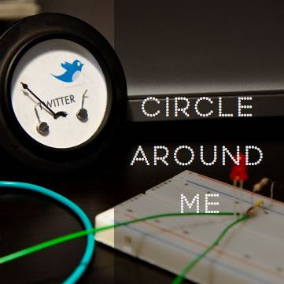

10 Foot Design
The problem
Prysm has built amazing visual workspaces which combine and present applications, content, video conferencing and the web to present an efficient collaborative system. However, user research has suggested that this amazing technology is mostly being used for presentations at the moment. Prysm wanted to understand this user behaviour and figure out how it could expand its business into the educational domain. Therefore, this project primary tries to answer the following questions :
- How do we shift the mental model of what a large screen display should do?
- What role does technology play within the current classroom dynamic?
- How can Prysm technology support teacher/student learning experience?
My role
I led UX Research, Information Architecture and Interaction Design in this project. I was primarily involved in understanding and documenting user needs through contextual inquiry, field studies and user interviews. I had also done extensive literature research on the existing work. My partner, Yhareli Chamboneth and I analyzed these research findings and built into userflows, wireframes and interactions for proposed new interface.
The Journey
Research and design at the intersection of education and large screen displays is both complex and interesting.
The outcome of this project would be a set of design principles and new features which Prysm could use across market verticals.
We tried to scope down our target audience and adopt the Lean UX approach. We identified certain classrooms and professors who are potentials users of this technology.
Customer Segment
School of Informatics
Human Centered Computing
Collaborative classrooms
Research Methods
Contextual Inquiry
User Interviews
Field Observations
{kind=link}
Research insights
UX Observations
- Visual signifiers for collaboration affordances can encourage more than one user to move up to the screen.
- Physical affordances like markers are more ergonomic for users than a fingers. Multiple markers could also encourage group participation on the large screens.
- Integration of file storage services like Google Drive, Box and Dropbox is essential for fluid information transfer.
{kind=link}
Classroom specific breakdowns
- No option for collaboration on Canvas
- No way to annotate shared sketche
- In-person student review is in-effective
- Lack of quick access to information about projects
Translating user research and needs into ideas
We had brainstormed several solutions to address the breakdowns we identified in our initial research. Two of our colleagues, Shilpa and Abdul from IUPUI had joined us at this stage of the project. We wanted to design this system from ground up tailored especially for classrooms. Our solutions were divided into 3 categories :
- Layout
- In-class
- Post class
{kind=link}
Testing out initial ideas
We had over 200 ideas for the breakdowns we identified. For the timeline we had, we tried to scope down our project further to student collaboration on group projects. Here are the user goals and research questions we wanted to answer with this user evaluation.
{kind=link}
Based on our ideas, user goals and the research questions, we had a created an MVP. To test our initial MVP, we divided our tasks into 2 categories :
Layout
Creating a document
Access project information
Workflow
Provide feedback
Change status of tasks
Based on our ideas, user goals and the research questions, we had a created an MVP. To test our initial MVP, here are the tasks we asked our users to perform:
1st Round - Paper Prototyping
We used a paper prototype to test out our initial ideas. This approach helped us iterate on our information architecture and UI elements quickly. Not only is this prototype quick to build, we could modify our prototype quickly to based on our user feedback to test out other ideas.
{kind=link}
Results from initial evaluation
- Too many visible layout controls
- The comment controls were confusing
- Window menu and the icons were unintuitive
- New users could not figure out a way a create a new document
2nd Round - Digital Prototyping
We used a digital prototype for the 2nd round as we thought we could more organic feedback from a large screen prototype using the Wizard-of-Oz approach. We had improved our design based on the feedback we got from the initial user testing.
Improvements
- Visible and accessible primary menu
- Simplification of the “comment” user flow
- Introduction of workspace header
- Swiss knife style sub-menus on windows
{kind=link}
Click here for the invision prototype
Results from 2nd round of testing
- User wanted to preview windows without comments
- The swiss knife menu was still unclear
- The users found templates very interesting
- User wanted to provide comments as a combination of text and annotations
3rd Round - Digital Prototyping
Improvements
- Simplified window menu
- View and comment mode made distinct with an overview
- Users were provided different comment options
{kind=link}
Change of plans for testing
- Since users were still viewing these workspaces as a private, we are planning to test the next prototype with 2 users. However, only one of them would be performing tasks.
- We are planning to use the Prysm system for testing instead of our large screen at the AVL as it is multi-touch and would provide a more organic experience rather than a wizard-of-oz.
This is an ongoing project. This project will be updated with more progress soon. In the meantime, reach out to me with any questions you have.
Here’s my e-mail address - jdara@iupui.edu
Other Projects
-

Blaine
Access data on your phone through simple hand gestures and head-display. Keep that phone in your pocket and still read your messages.
Click to read more -

Shopster
Shopster is like a good friend who helps you with all your grocery shopping, from making lists to buying things from the store.
Click to read more -

Circle Around Me
So many devices? So many notifications? Here is our attempt to optimize notifications for the "wearable future".
Click to read more